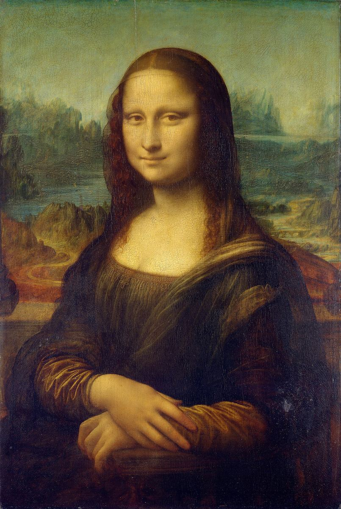

Mona Lisa

Palette
- Black · your word: Black
- Moss · your word: Moss
- Old burgundy · your word: Mahogany
- Brown · your word: Brown
- Hunter green · your word: Hunter green
- Mustard · your word: Mustard
Much of what you see is varnish. The Louvre says thick, oxidised varnish added after Leonardo's death works like a yellow filter: it turns the blue sky a moss green and darkens the lower half. The dress was probably dark green with yellow sleeves. The face is built from thin glazes with very little pigment, the soft shading called sfumato. So this palette is the painting as it looks today, not as Leonardo left it.
Image
Wikimedia Commons · Public domain

Hex values are screen approximations. Every page lists its sources.